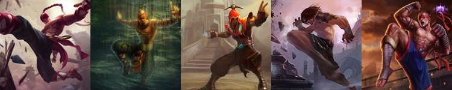

盲僧-李青
盲僧,别名瞎子,李青,盲僧。盲僧作为常驻的神级打野，打野效率和gank能力都非常优秀，可以说是打野英雄中的代表人物。你可以查看 使用他的小技巧，或者 熟悉他的技能。英雄本身在前期也很强势，唯一缺点就是后期较为乏力。 查看 打野排行榜。


盲僧,别名瞎子,李青,盲僧。盲僧作为常驻的神级打野，打野效率和gank能力都非常优秀，可以说是打野英雄中的代表人物。你可以查看 使用他的小技巧，或者 熟悉他的技能。英雄本身在前期也很强势，唯一缺点就是后期较为乏力。 查看 打野排行榜。